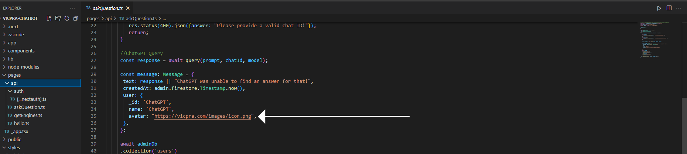
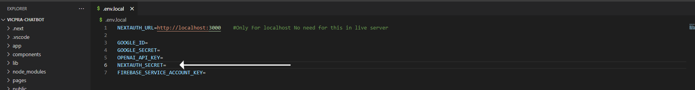
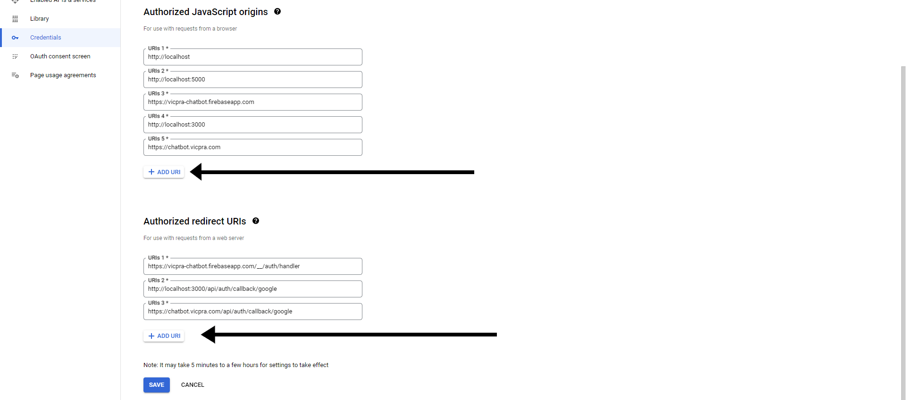

Full installation guide
Start development server
open visual studio code and open vicpra-chatbot then run this command make sure you have install nodejs in your system
npm installnpm run dev
Change website name and image :

After downloading and unzipping the file open vicpra-chatbot in Visual Studio Code then open next.config.js file and replace old domain with your new domain.
Open the app folder, then find a page.tsx file inside it, open it and replace it with whatever you want.
Open the app folder, then find a head.tsx file inside it, open it and replace title with whatever you want.
Open public folder and replace favicon with your own favicon.
To change Chatgpt response image, open pages/api/askQuestion.ts and replace it with your own image.
To change the image of the login screen, open the components/Login.tsx file and replace it with your own image.
First you have to add Google Id and Google Secret.
To add google id and google secret in .env file go to firebase console.visit
After login to firebase Add project by clicking on Add project button then open your project
After clicking on firebase project, click on Build tab, then go to Authentication, then go to sign in method and click on Google icon.
After that click on google and copy paste your google id and secret. on .env file.
Now we will add the secret key of openai, for that you go to the website of openai visit and create your secret key.
Now we will add nextauth secret for this we have to copy the value from this website visit
Now we have to enable Google Authentication to login, for that we have to login to Google Cloud visit and the account should be same which was used in our firebase account.
And click on API's & Services tab and then click Credentials.
After opening the credentials, click on the web client (auto created by google service) link.
Now add authorization URL.
In the Authorized javascript origins field add this value like this https://yourdomain.com/for this type of url add custom domains in vercel.
In the Authorized redirect URI's field add this value like this https://yourdomain.com/api/auth/callback/googlefor this type of url add custom domains in vercel.
Now we have to create a firestore database in firebase, for this we have to login to firebase then click on build tab then click on Firestore database and create your database.
Note : If you want, you can select any rule, production and test, but we will use it for testing purposes, so if you want, you can create a database on test mode.
For testing purpose, the rules should look like the ones shown in the image below or you can add your own rules like here visit

Now we have to add some important values in firebase.ts
To add the value, we have to go to firebase, then project settings, then after that we have to click on register app, the steps are given below.
Copy all values and paste in firebase.ts
Now we have to add the value of serviceAccountKey.json, for this we have to go to firebase, click on project settings, then click on service account tab, then after clicking on generate new private key, download it.
Open your firebase generated service keys file then copy all the values and replace all the values which are inside serviceAccountKey.jsonand then save and exit.
Now again copy firebase service account keys and paste it in .env file but before that we have to remove-line-breaks from the text and add it to .env for this you can go to this site remove line breaks
When you remove line break then after that you do it. add to .env and save.
And run npm installagain.
After everything is correct, we will deploy it and we will use Vercel to deploy, that too with custom domain visit.
Now type vercel in terminal and then login with your vercel account.
Deploying in vercel then copy the Inspect URL and open it on the browser.
After copying the inspect url go to project settings.
After opening Settings, open Environment Variables.
Now copy everything inside the .env.local file 'Don't copy this NEXTAUTH_URL=http://localhost:3000' After copying and pasting the environment variables of your vercel project, save it. and run this command vercel --prod.
If you want to add your custom domain then you will get this error to fix this we have to update our credential in google cloud.
You can view your URI's like this.
Add custom domain in vercel https://vercel.com/docs/concepts/projects/domains/add-a-domain
When you add your custom domain then you give this command again.
vercel
or
vercel --prod
After everything is complete use your chatbot.
If you have any problem then you can contact us.